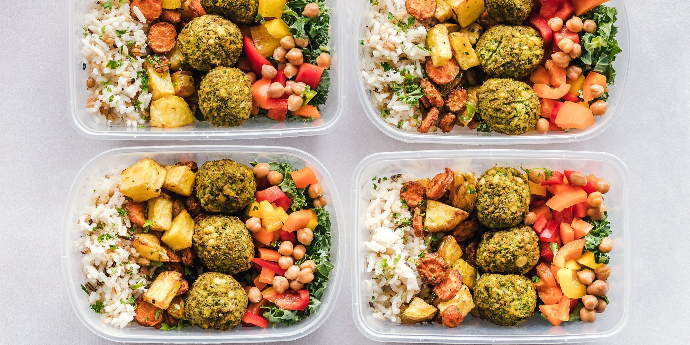
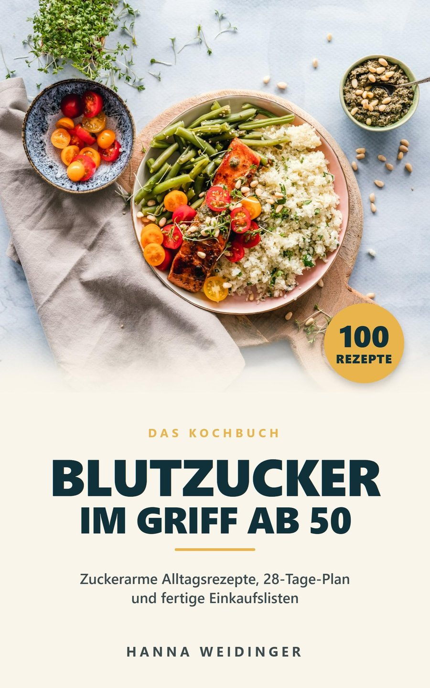

Ein Thema, ein Band
Jeder Band hat einen klaren Schwerpunkt – etwa Alltagsküche ab 40, eiweißreiche Gerichte oder Kochen in den Wechseljahren.

Kochbuch-Reihe
Rezepte, Wochenplan und Einkaufslisten von Hanna Weidinger. Gekauft wird bei Amazon.
Für den Alltag
Die Bücher richten sich an Menschen, die zu Hause kochen und sich einen klaren Ablauf wünschen: was auf den Tisch kommt, wie die Woche aufgeteilt ist, und was in den Einkaufskorb gehört.
Jeder Band hat einen klaren Schwerpunkt – etwa Alltagsküche ab 40, eiweißreiche Gerichte oder Kochen in den Wechseljahren.
Zu den Rezepten gehört ein 28-Tage-Plan und Listen für den Einkauf, damit die Woche nicht jedes Mal neu erfunden werden muss.
Die Titel gibt es für den Kindle und als Taschenbuch. Ob Kindle Unlimited gerade gilt, steht auf der jeweiligen Amazon-Seite.
Die Reihe
Hier sind die derzeit lieferbaren Titel. Preise und Verfügbarkeit siehst du bei Amazon. Ein weiterer Band folgt nach dem 10. Dezember 2026 und steht deshalb noch nicht auf dieser Seite.

Band 1
Schnelle Alltagsrezepte, ein 28-Tage-Plan und fertige Einkaufslisten.

Band 2
Alltagstaugliche Rezepte, 28-Tage-Plan und fertige Einkaufslisten.

Band 3
Alltagsrezepte, 28-Tage-Plan und Einkaufslisten für die Woche.

Band 4
Eiweißreiche Alltagsrezepte ohne Pulver und ohne Shakes, mit 28-Tage-Plan und Einkaufslisten.

Band 5
Rezepte für große Portionen, 28-Tage-Plan und Einkaufslisten.

Band 6
Rezepte mit 30 g Eiweiß je Hauptmahlzeit, Calciumwert je Rezept, 28-Tage-Plan und Einkaufslisten, ohne Pulver.

Band 7
Das Kochbuch mit 8 Wochenplänen und 100 Gerichten: sonntags vorkochen, jeden Tag anders.
Auf der Amazon-Serienseite siehst du alle zugeordneten Bände im Überblick.
Zum Nachkochen
Kein Auszug aus den Büchern, sondern ein eigenes Kurzrezept für den Alltag – im Stil der Reihe, zum direkten Kochen.

Dieses Rezept wurde ausschließlich für diese Website geschrieben. Es stammt nicht aus den Büchern der Reihe.
Kurz erklärt
Ausschließlich über Amazon. Die Buttons auf dieser Seite führen zur jeweiligen Produktseite. Verkäufer ist Amazon, nicht die Autorin über diese Website. Es gibt hier keinen eigenen Shop und keine Zahlung.
Ja. Der Button führt in der Regel zur eBook-Seite; dort kannst du über den Formatwechsler auch das Taschenbuch öffnen. Beide ASINs stehen in der Titelliste dieser Seite.
Das kann sich ändern. Ob ein Band gerade in Kindle Unlimited enthalten ist, siehst du immer aktuell auf der Amazon-Seite des eBooks. Diese Seite führt keine eigenen Preise oder Aktionen.
Die Leseprobe liegt bei Amazon („Blick ins Buch“ bzw. „Look Inside“). Die Links auf dieser Seite öffnen genau diese Produktseite. Das Rezept weiter oben ist ein eigenes Beispiel der Website und kein Buchauszug.
Den aktuellen Preis zeigt Amazon. Er kann sich unterscheiden, je nach Format, Marktplatz und allfälligen Aktionen. Hier werden keine Preise festgeschrieben.
Bitte beachten
Die Bücher und diese Seite ersetzen keine medizinische oder ernährungstherapeutische Beratung. Bei gesundheitlichen Fragen wende dich an eine Ärztin, einen Arzt oder eine qualifizierte Fachperson.
Texte auf dieser Seite und die Bücher der Reihe sind unter Verwendung digitaler Werkzeuge entstanden.